Casi 30 años de experiencia ayudando a resolver problemas críticos de negocio con soluciones tecnológicas a la medida. Somos +900 Softers con presencia global: oficinas en Colombia, Panamá, El Salvador, Guatemala y Estados Unidos, y proyectos en Francia y Curazao.
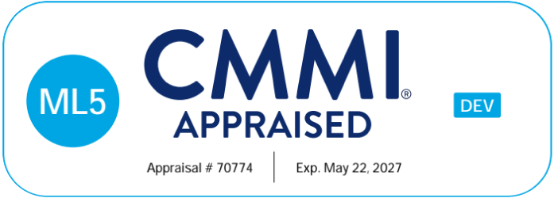
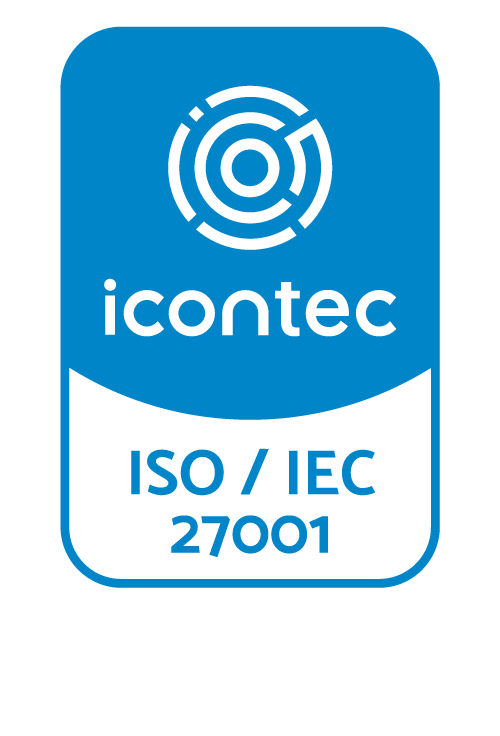
Construimos y modernizamos: desarrollo de software con metodologías ágiles potenciadas por nuestros agentes de IA (PAP), sistemas heredados convertidos en soluciones modernas, seguras y listas para la nube, y una ruta de adopción cloud según el nivel de madurez de tu empresa.
Simplificamos y automatizamos procesos con VSM, BPMS, RPA y herramientas de Low code. Llevamos tu operación al siguiente nivel con APA (Agentic Process Automation): estrategia de IA, hiperautomatización y control de agentes. El resultado: menos errores, más velocidad y operaciones ágiles, inteligentes y escalables.
Datos que deciden: arquitecturas de referencia, plataformas de datos, gobierno y migración; DataOps, MLOps e ingeniería de datos para analítica avanzada; e Ingeniería de procesos con BPMN, DMAIC, Lean Six Sigma y gemelos digitales para detectar cuellos de botella.
Smart Factory: software, QA & Testing y sostenimiento de producto, de punta a punta. Delivery Center impulsado por IA: atraemos, asignamos y gestionamos talento experto mientras tú mantienes el control. Elige el modelo que mejor se ajuste a tu proyecto: Ágil puro, Control ágil o Tiempo y costo fijo.
Construimos, modernizamos y llevamos a la nube las soluciones tecnológicas de tu empresa, con metodologías ágiles potenciadas por nuestros agentes de IA.
Metodologías ágiles potenciadas por nuestros agentes de IA (PAP).
Menos tiempo de desarrollo · Calidad · Optimización de recursos
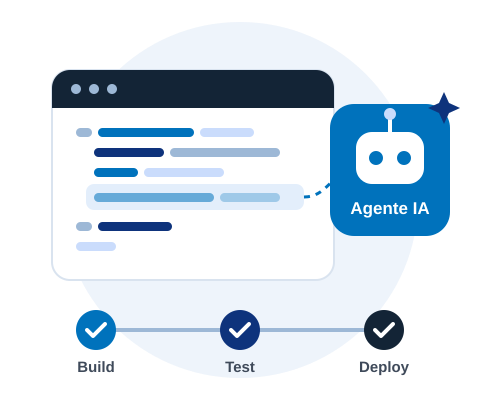
Sistemas heredados convertidos en soluciones modernas, seguras y listas para la nube.
Escalabilidad · Seguridad · Eficiencia de costos
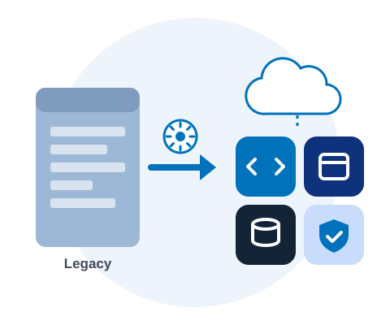
Ruta de adopción cloud según el nivel de madurez de cada empresa.
Elasticidad · Menores costos · Despliegue acelerado
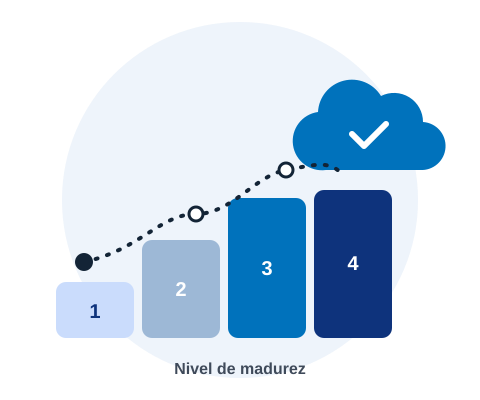
Casos de éxito · Soluciones En Desarrollo
Retail
Una marca colombiana de ropa interior, presente en 16 países, quería llevar su venta por catálogo, con más de 353.000 representantes, a una plataforma digital.
El reto: un canal digital moderno sin debilitar su red de ventas.
Con un equipo de 22 personas, en 14 meses (21.000 horas) se construyó una app web robusta con pagos, ventas cruzadas, seguimiento de pedidos e incentivos.
Streaming deportivo
Una plataforma global de streaming deportivo necesitaba una aplicación web para gestionar subaplicaciones internas con distintos alcances.
Se necesitaba una arquitectura sólida para integrar aplicaciones y crecer sin conflictos.
Llevamos el proyecto de cero a producción con SSR y prácticas rigurosas de CI/CD.
Movilidad sostenible
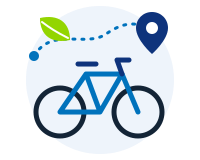
Una plataforma global de movilidad sostenible con registro de recorridos, cálculo de CO₂, concursos y un mapa colaborativo de rutas, necesitaba crear una app con una experiencia robusta.
Para llegar a más usuarios, la plataforma necesitaba llevar su app a Android con una experiencia robusta y fiel a su misión.
Creamos la versión Android con Flutter y código nativo, con seguimiento GPS, calificación de rutas y QA automatizado.
Aerolínea
Una aerolínea de bajo costo colombiana necesitaba modernizarse con productos digitales para gestionar reservas y hacer el Web Check-in.
Debían escalar, optimizar ventas y check-in, reforzar la seguridad y mejorar la experiencia móvil.
Con microservicios y micro frontends renovamos la gestión de reservas y el check-in, con autogestión y pagos desde cualquier dispositivo.
Simplificamos y automatizamos procesos, y escalamos hacia la hiperautomatización con agentes de IA para lograr operaciones ágiles, inteligentes y escalables.
VSM, BPMS y RPA para simplificar y automatizar procesos.
Menos errores · Más velocidad · Integración con sistemas
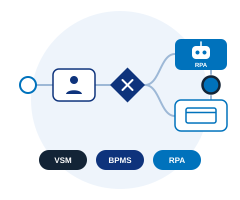
Con APA (Agentic Process Automation): estrategia de IA, hiperautomatización y control de agentes.
Operaciones ágiles, inteligentes y escalables
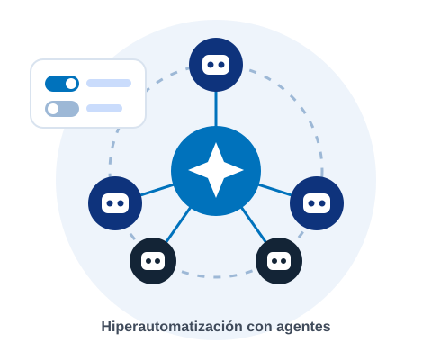
Casos de éxito · Automatización
Apertura de cuenta
La apertura de cuenta digital exigía validar manualmente documentos como facturas, DNI, cartas laborales y declaraciones de renta.
El proceso manual de cada documento alargaba los tiempos justo cuando el cliente vivía su primera experiencia digital.
Incorporamos capacidades de IA adaptada a cada tipo de documento para una extracción automática y precisa.
Embargos
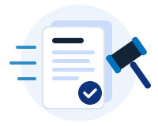
Más de 6 analistas del área legal revisaban manualmente cerca de 105.000 solicitudes jurídicas y de embargo al mes, en distintos formatos.
Con una demanda en aumento, el proceso manual ponía en riesgo los SLA de 3 a 5 días y exponía a errores y sanciones.
Automatizamos el proceso con Power Automate, AI Builder, GPT Prompt y Power Apps: recepción desde Outlook, extracción inteligente y datos legales estandarizados.
Clasificación de tickets
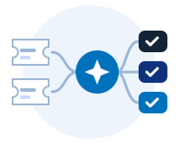
En una reconocida entidad financiera, los oficios llegaban como tickets a Zendesk y cada uno debía leerse, interpretarse y clasificarse manualmente por el equipo.
Revisar cada documento y tipificarlo a mano consumía tiempo y exponía el proceso a errores e inconsistencias en la clasificación.
Automatizamos el flujo completo en N8N: extracción del oficio, clasificación con IA, nota interna con tipificación y métricas en un dashboard. Del ticket en Zendesk al oficio tipificado, de punta a punta.
Migración a Power Platform
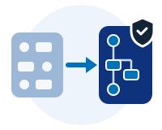
Un líder financiero colombiano debía migrar 250+ flujos críticos de Bizagi a Power Platform debido a altos costos de licenciamiento y limitaciones operativas.
El reto no era solo la migración técnica: se debían rediseñar los procesos con calidad, seguridad y gobierno, sin frenar la operación.
Diseñamos e implementamos una migración a Power Platform con células ágiles, gobierno y acompañamiento continuo.
Datos que deciden: procesamos, gobernamos y analizamos la información de tu negocio para que esté disponible, sea confiable y se convierta en mejores decisiones.
Arquitecturas de referencia, plataformas de datos, gobierno y migración.
Información disponible · Mejores decisiones · Calidad de datos
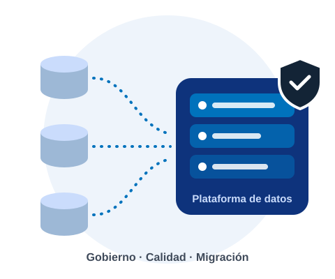
DataOps, MLOps e ingeniería de datos para analítica avanzada.
Menos tiempo y costo · Fiabilidad · Monetización de datos
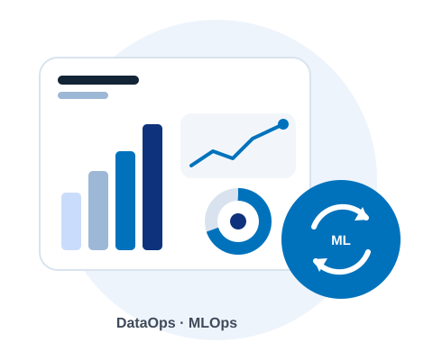
Detectamos cuellos de botella con BPMN, DMAIC, Lean Six Sigma y gemelos digitales.
Mejor desempeño · Automatización inteligente
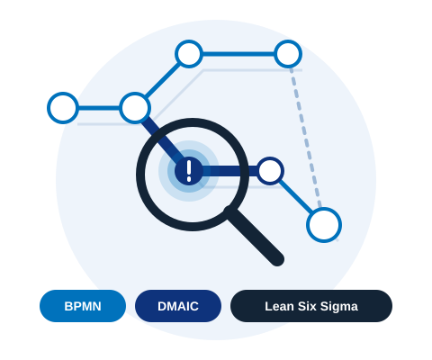
Casos de éxito · Gestión de Datos
Salud · Predicción
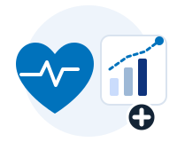
Un prestador de salud especializado en enfermedades de alto costo necesitaba anticipar desenlaces adversos en pacientes con artritis reumatoide.
Desarrollar un modelo predictivo para intervenir a tiempo, mejorar la atención y reducir costos en pacientes con artritis reumatoide.
Analizamos las variables que inciden en esta enfermedad y, con datos anonimizados, creamos dos modelos que clasifican a los pacientes según su riesgo. Con la plataforma Airflow garantizamos ejecución automatizada, escalabilidad y repetibilidad del proceso predictivo.
Eficiencia clínica
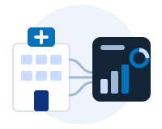
Una reconocida institución médica buscaba integrar los reportes de sus departamentos para analizar su operación, mejorar el rendimiento institucional y reducir costos médicos.
Tener una visión más transversal de su desempeño para reducir los costos médicos y tomar mejores decisiones.
Aportamos perfiles clave en diseño de sistemas de datos y procesos ETL, con gestión integral de programas estratégicos de datos, mapeo y optimización de procesos de información.
Aseguradora
Una aseguradora líder en Colombia tenía reclamaciones por siniestros dispersas por producto y canal, con poco control y una experiencia limitada del afiliado.
Crear una plataforma digital de autogestión para reclamaciones en un solo lugar, con transparencia, rapidez y acceso desde cualquier dispositivo.
Conformamos un squad especializado en desarrollo backend y ejecutamos pruebas automatizadas para garantizar calidad y escalabilidad.
Modelos de entrega flexibles: un servicio de punta a punta o talento experto que se suma a tu equipo, con un Delivery Center impulsado por IA.
Software, QA & Testing y sostenimiento de producto, de punta a punta.
Agilidad · Seguridad · Eficiencia · Aceleración digital
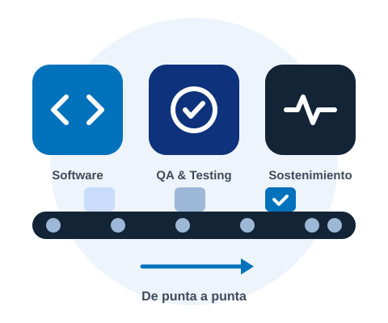
IT Staffing: atraemos, asignamos y gestionamos talento experto. Tú mantienes el control.
Pool de expertos · Contratación flexible · C4E
Ideal cuando el producto está en evolución, liderado por el equipo interno. Sin alcance fijo · Equipos dedicados · Backlog dinámico.
Ideal cuando hay alcance parcial con visibilidad de costos. Discovery en tiempo fijo · Re-estimación · Sprint a sprint.
Ideal cuando el alcance es claro y la previsibilidad es la prioridad. Alcance, precio y plazo fijos · Control de cambios.
Talento que se suma a tu equipo · IA supervisada por el especialista.
100% de KPI técnicos acordados · Entrega integral · IA semiautónoma · Gerente de proyecto dedicado.
El agente aumenta la capacidad; la persona conserva la decisión. Nada se entrega sin revisión humana.
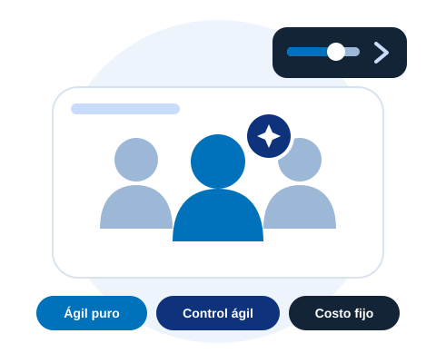
Escanea el código QR para más información